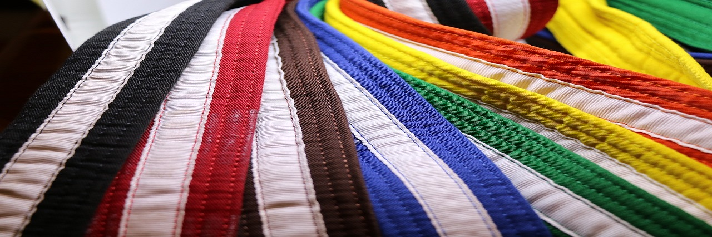

Which belt matches your experience?
White Belt: The journey in Taekwondo begins with the White Belt, symbolizing purity and the blank slate of knowledge. At this stage, students focus on fundamental techniques, stances, and basic forms (katas) to build a strong foundation for their martial arts journey.
Yellow Belt: As students progress to the Yellow Belt, they gain a deeper understanding of Taekwondo's principles and philosophy. They continue to refine basic techniques and start learning more advanced kicks and self-defense techniques. Discipline and respect are emphasized throughout this stage.
Green Belt: The Green Belt signifies growth and progress. At this level, students develop increased flexibility and power in their kicks. They also begin to explore sparring and controlled combat, learning the importance of control and sportsmanship in Taekwondo.
Blue Belt: As students attain the Blue Belt, they refine their techniques even further, focusing on precision and accuracy. They deepen their understanding of Taekwondo's moral code and ethics, emphasizing self-control and humility both in and out of the dojang (training hall).
Red Belt: The Red Belt represents the intermediate stage of Taekwondo mastery. Students at this level are highly skilled and knowledgeable. They are encouraged to mentor lower-ranked students, instilling leadership qualities and a sense of responsibility. The Red Belt is a transition phase towards achieving the coveted Black Belt.
Black Belt: Achieving the Black Belt is a significant milestone in a Taekwondo practitioner's journey. It symbolizes a high level of technical proficiency, discipline, and character development. Black Belts continue to advance through various Dan (degree) levels, each requiring a deep commitment to lifelong learning and self-improvement.